Tree
- It is a non-linear, acyclic, recursive data structure.
Why Tree Data structure?
- Other data structures such as arrays, linked list, stack, and queue are linear data structures that store data sequentially. In order to perform any operation in a linear data structure, the time complexity increases with the increase in the data size. But, it is not acceptable in today's computational world.
- Different tree data structures allow quicker and easier access to the data as it is a non-linear data structure.
Tree Terminologies
Node
- Each element in a tree is called a node.
- It can contain data and references to other nodes.

Edge/branch
- The path line which connects two nodes.
- Note: A tree having 'n' number of nodes has 'n-1' edges.
Root
- This is the topmost node of a tree.
- It serves as the starting point for traversing the tree and has no parent.
Parent
- A node that has one or more child nodes is called a parent. It is the immediate ancestor of its children.
- B is parent as D, E and F are its children.
Child
- Nodes directly connected to a parent node are called its children. A parent can have zero or more children.
- D, E and F are children of B.
Sibling
- Nodes that share the same parent are called siblings. They are at the same level in the tree.
Leaf node
- Nodes that do not have any children are called leaves or leaf nodes. They are the terminal nodes in a tree.
Ancestor
- A node's ancestors are its parent, grandparent, and all the nodes on the path to the root.
Descendant
- A node's descendants are its children, grandchildren, and all the nodes reachable from it by following edges downward.
Subtree
- A subtree is a smaller tree formed by a node and all its descendants, including the node itself.
Internal nodes
- Nodes other than leaf nodes are known as internal nodes.
External nodes
- Leaf nodes are known as external nodes.
Depth/Level
- The depth or level of a node represents its distance from the root. The root has a depth of 0, its children have a depth of 1, and so on.
Height
- The height of a tree is the maximum depth among all its nodes. It represents the length of the longest path from the root to a leaf node.

Degree
- The degree of a node is the number of children it has. A node with no children has a degree of 0, and a node with two children has a degree of 2.
Forest
- A collection of disjoint trees is called a forest. It consists of multiple trees with no common root.
Types of tree
- Generalized tree
- Binary tree
- Binary search tree
- Full binary tree
- Complete binary tree
- Height balance tree
- Left skewed tree
- Right skewed tree
- Forest many tree
Generalized tree
- Generalized tree : It have no restrictions of level and number of child nodes of a parent.

Binary tree
- It is a type of tree data structure in which each node has at most two children, referred to as the left child and right child.
- In a binary tree:
- Each node can have zero, one, or two children.
- The left children is positioned to the left of the parent node.
- The right child is positioned to the right of parent node.
Binary search tree (BST)
- It is a specialized form of binary tree data structure in which the elements are organized in a specific order.
- In a binary search tree, the left child of a node contains a value smaller than the node's value, and the right child contains a value greater than the node's value. This property allows for efficient searching, insertion, and deletion operaton.
- Key properties of a binary search tree:
- Ordering property: For any given node in the binary search tree, all the values in left subtree are less than its value, and all the values in its right subtree are greater than its value.
- Unique Keys: Each node in the binary search tree has a unique key: No two nodes can have the same key.
- The binary search tree property enables efficient searching because it allows for a binary search algorithm to be applied. When searching for a value in a binary search tree, comparisons are made at each node, and based on the comparisons, the search can efficiently proceed to the left or right subtree, narrowing down the search space.
Full binary tree
- A full binary tree is a special type of binary tree in which every node has either 0 or 2 children. In other words, every node in a full binary tree is eiher a leaf node (having no children) or an internal node with exactly two child nodes.
- Key properties of a full binary tree:
- Each node in the tree is either a leaf node or has exactly two children.
- All leaf nodes are at the same level.
Complete binary tree
- A complete binary tree is another type of binary tree where all levels are completely filled, except possibly for the last level, which is filled from left to right. In other words, in a complete binary tree, all nodes are placed as far left as possible at each level, creating a left-skewed structure.
- Key properties of a complete binary tree:
- All levels of the tree, except possibly the last one, are completely filled with nodes.
- If the last level is not completely filled, the nodes are filled from left to right.
Height-balanced tree
- A height-balanced tree, also known as an AVL tree, is binary search tree that maintains a balance condition to ensure efficient operations.
- In a height-balanced tree, the heights of the left and right subtrees of any node differ by at most one.
- This balanced condition helps to maintain a relatively low height of the tree, which leads to efficient search, insertion and deletion operations.
- Key properties of a height-balanced tree (AVL tree):
- Balance factor: The balanced factor of a node in a height-balanced tree is defined as the difference between the heights of its left and right subtrees. A node is considered balanced if its balance factor is -1, 0 or 1.
- Balance Maintenance: When performing insertion or deletion operations that may violate to restore balance. These rotations rearrange the tree structure while maintaining the order of the keys.
- By maintaining the balance condition, height-balanced trees ensure that the height of the tree remains relatively low and balanced, resulting in efficient performance for various operations.
Left-skewed tree
- A left-skewed tree, also known as a left-leaning tree or a left-heavy tree, is a binary tree in which the majority of nodes and branches are oriented towards the left side of the tree.
Right-skewed tree
- A right-skewed tree, also known as a right-leaning tree or a right-heavy tree, is a binary tree in which the majority of nodes and branches are oriented towards the right side of the tree.
Binary tree representation
Using array
- left child of a node = 2n + 1
- right child of a node = 2n + 2
- n = index of parent node
The array method of representing a binary tree has some limitations and may not be suitable in all scenarios. Here are some reasons why the array method may not be considered ideal:
- Wasted space: The array representation can result in wasted space when the binary tree is not complete or nearly complete. If the tree is unbalanced, a significant portion of array will be left unused, leading to inefficient memory utilization.
- Dynamic Size: The array representation requires a fixed-size array, which may be impractical if the size of the binary tree needs to change dynamically. If the tree grows beyond the capacity of the array, it would require resizing the array or allocating a larger array, resulting in extra overhead and potentially costly operations.
- Insertion and Deletion: Insertion and deletion operations can be challenging and inefficient in the array representation. When a new node is inserted or a node is deleted from the tree, it may require shifting elements in the array to maintain the tree structure, resulting in costly time complexity, especially for large trees.
- Lack of Dynamic Operations: The array representation does not naturally support dynamic operations such as splitting or merging subtrees. Performing such operations efficiently would require additional manipulation of the array and potentially complex algorithms.
- Tree Operations: Performing certain tree operations like finding the parent of a node or navigating to a particular level in the tree can be less straightforward and require additional calculations compared to other tree representations that use explicit pointers.
While the array representation has its advantages, such as simplicity and efficient indexing, it may not be the best choice in situations where the binary tree is large, dynamically changing, or unbalanced. Other representations like linked lists or explicit node structures with pointers may be more appropriate for such scenarios.
Linked list representation
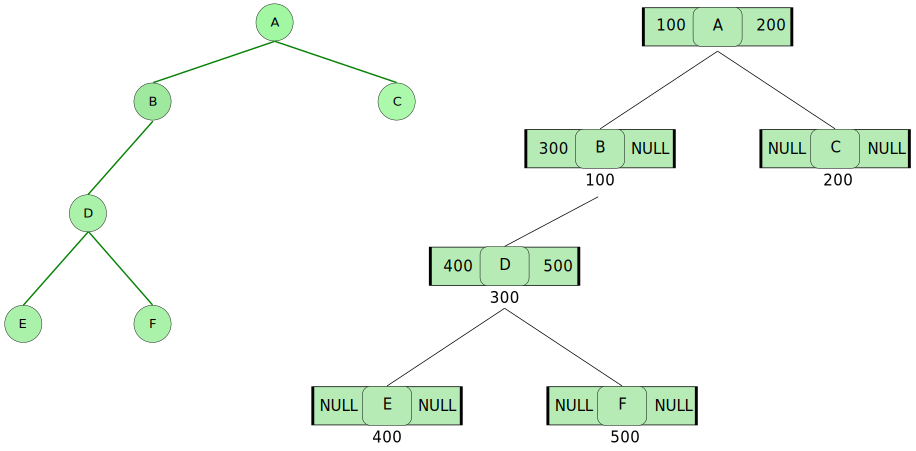Node structure ↓
struct node
{
struct node *left;
int data;
struct node *right;
};
Traverse in Binary tree
There are three order by which we can traverse a binary tree:
- Pre order traversal
- Post order traversal
- In order traversal
1- Pre order traversal technique
Algorithm ↓
- Visit the node
- Traverse left sub tree
- Traverse right sub tree
Example ↓
2- Post order traversal technique
Algorithm ↓
- Traverse left sub tree
- Traverse right sub tree
- Visit the node
Example ↓
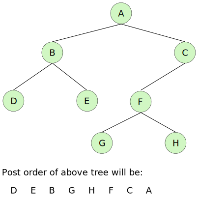3- In order traversal technique
Algorithm ↓
- Traverse left sub tree
- Visit the node
- Traverse right sub tree
Example ↓
- Generally we use in-order traversal.
Q- Make binary tree using in-order and post order traversal list.
- Post order - 9, 1, 2, 12, 7, 5, 3, 11, 4, 8 (Left, Right, Node)
- In order - 9, 5, 1, 7, 2, 12, 8, 4, 3, 11 (Left, Node, Right)
Sol:
- In order traversal list is important to make the tree.
- We know that in post order, root node comes at last so the last node in post order will be the root node.
- In post order we go from left to right for scanning.

Q- Make binary tree using in-order and pre order traversal list.
- Pre order - 1, 2, 4, 8, 9, 10, 11, 5, 3, 6, 7 (Node, left, right)
- In order - 8, 4, 10, 9, 11, 2, 5, 1, 6, 3, 7 (Left, Node, Right)
Sol:
- We know that in pre order, root node comes at first so the first node in pre order will be the root node.
- In pre order we go from right to left for scanning.
Concept of expression tree
Q- Make binary tree of infix expression (a+b)/c*(d^f)
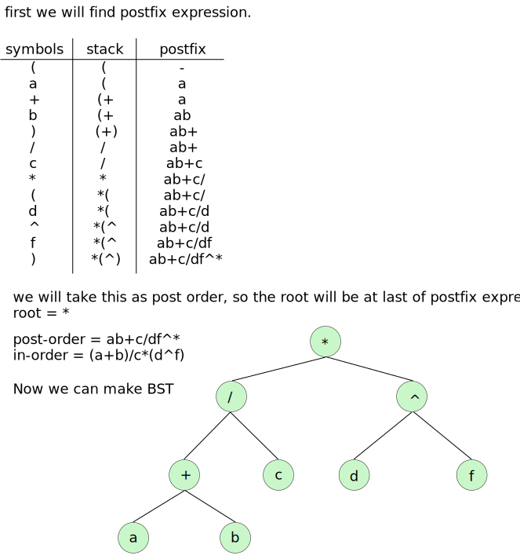Operations on Binary Search Tree
Insertion
Inserting following list in BST
30, 4, 40, 10, 29, 48, 35, 90
- First element becomes the root node.
- If a element is smaller then root node then it comes it left and subtree and if it greater than it comes in right sub tree.
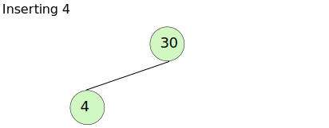
As 4 is smaller then 30, so it get placed in left side of root node.
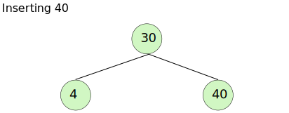As 40 is greater then 30, so it get placed in right side of root node.
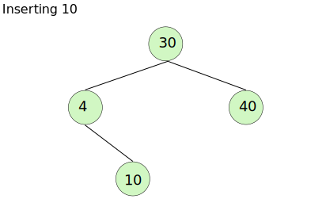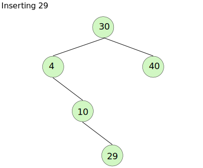
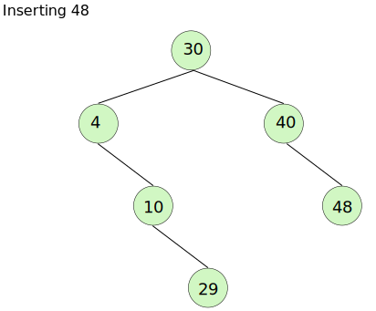
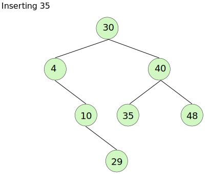
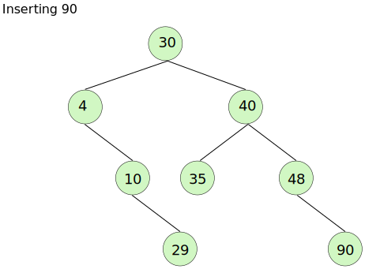
Deletion
There are three condition:
- Deleting leaf node
- Deleting node having one child node
- Deleting node having two child nodes
Deleting leaf node
- Simply remove it and put NULL in parent node.
Deleting node having one child node
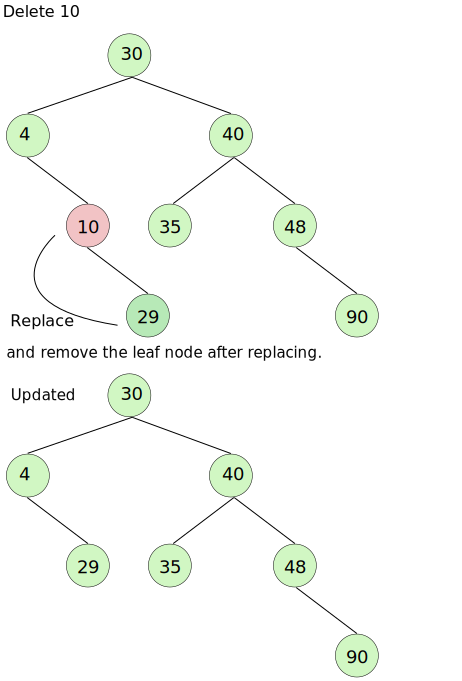Deleting node having two child nodes
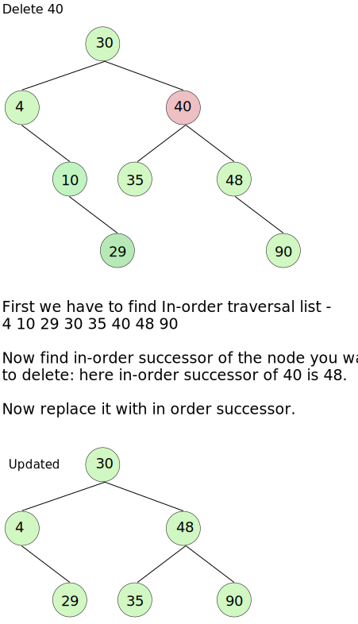Searching
Algorithm:
if(node == search)
{
return 1;
}
else if(search < node)
{
traverse left subtree
}
else
{
traverse right subtree
}
AVL Tree
- AVL tree is a height-balanced binary search tree. That means, an AVL tree is also a binary search tree but it is a balanced tree.
- A binary tree is said to be balanced if, the difference between the heights of left and right subtrees of every node in the tree is either -1, 0 or +1.
- In an AVL tree, every node maintains an extra information known as balance factor.
- Balance factor of a node is the difference between the heights of the left and right subtrees of that node.
- Balance factor = height of left subtree - height of right subtree.
- The AVL tree was introduced in the year 1962 by G.M. Adelson-Velsky and E.M. Landis.
- The above tree is a binary search tree and every node is satisfying balance factor condition. So
this tree is said to be an AVL tree.
Every AVL tree is a binary search tree but every Binary search tree need not be AVL tree.
AVL Tree Rotations
- In AVL tree, after performing operations like insertion and deletion we need to check the balance factor of every node in the tree.
- If every node satisfies the balance factor condition then we conclude the operation otherwise we must make it balanced.
- Whenever the tree becomes imbalanced due to any operation we use rotation operations to make the tree balanced.
- Rotation is the process of moving nodes either to left or to right to make the tree balanced.
- There are four rotations and they are classified into two types.
- Single rotation
- Left rotation
- Right rotation
- Double rotation
- Left Right rotation
- Right Left rotation
- Single rotation
Single Left Rotation (LL Rotation)
- When a node is added into the right subtree of the right subtree, if the tree gets out of balance, we do a LL rotation..
- In LL Rotation, every node moves one position to left from the current position.
- To understand LL rotation, let us consider the following insertion operatino in AVL tree. 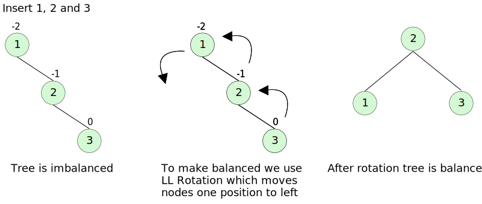
Single Right Rotation (RR Rotation)
- If a node is added to the left subtree of the left subtree, the AVL tree may get out of balance, we do a RR rotation.
- In RR Rotation, every node moves one position to right from the current position.
- To understand RR rotation, let us consider the following insertion operatino in AVL tree. 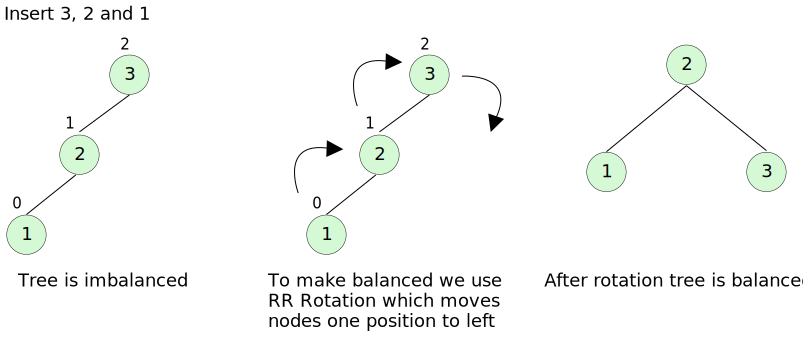
Left Right Rotation (LR Rotation)
- The LR rotation is a sequence of single left rotation followed by a single right rotation.
- In LR Rotation, at first, every node moves one position to the left and one position to right from the current position.
- To understand LR rotation, let us consider the following insertion operatino in AVL tree.

Right Left Rotation (RL Rotation)
- When a node is inserted to the left of the right child of a parent node, causing an imbalance, it can be balanced using an RL rotation.
- The RL rotation is a sequence of single right rotation followed by a single left rotation.
- In RL Rotation, at first every node moves one position to right and one position to left from the current position.
- To understand RL rotation, let us consider the following insertion operatino in AVL tree. 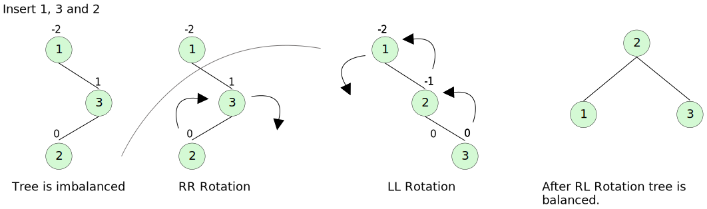
Operation on an AVL Tree
The following operations are performed on AVL tree.
- Search
- Insertion
- Deletion
Search Operation in AVL Tree
- In an AVL tree, the search operation is performed with O(log n) time complexity.
- The search operation in the AVL tree is similar to the search operation in a binary tree.
We use the following steps to search an element in AVL tree.
- Read the search element from the user.
- Compare the search element with the value of root node in the tree.
- If both are matched, then display "Given node is found!" and terminate the function.
- If both are not match, then check whether element is smaller or larger than that node value.
- If search element is smaller, then continue the search process in left subtree.
- If search element is larger, ten continue the search process in right subtree.
- Reapeat the same until we found the exact element or until the search element is compared with the leaf node.
- If we reach to the node having the value equal to the search value, then display "Element is found" and terminate the function.
- If we reach to the leaf node and if it is also not matched with the search element, then display "Element is not found" and terminate the function.
Insertion Operation
- In an AVL tree, the insertion operation is performed with O(log n) time complexity. In AVL Tree a new node is always inserted as a leaf node.
The insertion operation is performed as follows:
- Insert the new element into the tree using Binary Search Tree insertion logic.
- After insertion, check the Balance Factor of every node.
- If the Balance Factor of any node is other than 0, 1 or -1 then go for next operation.
- If the Balance Factor of any node is other than 0, 1 or -1 then that tree is said to be imbalanced. In this case, perform suitable rotation to make it balanced and go for next operation.
Deletion operation
- The deletion operation in AVL is similar to deletion operation in BST. But after every deletion operation, we need to check with the balance factor condition.
- If the tree is balanced after deletion go for next operation otherwise perform suitable roation to make the tree balanced.
Huffman tree
- A Huffman tree, also known as a Huffman coding tree or Huffman algorithm, is a binary tree used in data compression to generate variable-length prefix codes for characters or symbols.
- For message coding we use Huffman tree.
Huffman coding
- Huffman coding is a specific algorithm and technique used for data compression but it can also be seen as a form of encoding.
- It was developed by David A. Huffman in 1952 while he was a student at MIT.
- The purpose of Huffman coding is to efficiently represent data by assigning variable-length binary code to symbols based on their frequency of occurence.
- The algorithm begins by analyzing the input data and creating a frequency table or histogram of the symbols present. This table lists each symbol along with its frequency count, which represents how often the symbol appears in the data.
- Using the frequency table, the Huffman coding algorithm builds a binary tree called a Huffman tree or coding tree. The tree is constructed in a way that allows the more frequent symbols to have shorter binary codes, while less frequent symbols have longer binary codes.
- To build the Huffman tree, the algorithm repeatedly combines the two symbols with the lowest frequencies and creates a new internal node with a combined frequency equal to the sum of the frequencies of the two symbols. This process continues until all symbols are incorporated into the tree.
- Once the Huffman tree is constructed, each symbol is assigned a binary code by traversing the tree from the root to the symbol. The binary code is determined by the path taken during the traversal: moving to the left child corresponds to a "0" bit, while moving to the right child corresponds to a "1" bit. As a result, the codes assigned to symbols in the Huffman tree are prefix codes, meaning no code is a prefix of another code, ensuring unambiguous decoding.
- Finally, the input data is encoded using the assigned Huffman codes. The original symbols are replaced with their corresponding binary codes, resulting in a compressed representation of the data. To decode the compressed data, the same Huffman tree is used to map the binary codes back to their original symbols.
- Huffman coding is widely used in various applications where data compression is desired, such as file compression algorithms (e.g., ZIP), image compression (e.g., JPEG), and video compression (e.g., MPEG). Its effectiveness lies in its ability to achieve a compact representation of data by assigning shorter codes to frequently occurring symbols, leading to efficient storage or transmission of information.
Let's see other coding technique
- We can see in ASCII coding that even if we are using only 5 letters of alphabet in our message, still we have 8 bits of size of each letter.
- So, can we use our own code with less amount of bits? Yes, We can fix this using Huffman coding.
B Trees and B+ Trees
Before learning B Trees and B+ Trees we have to go through some topic:
- Disk structure
- How data is stored on Disk
- What is Indexing
- What is multilevel indexing
- M-way search trees
- B-Trees
- Insertion & Deletion on B-Trees
- B+ trees
Disk structure
- Data is stored in blocks.
How data is accessed
How data is organized on the disk in the form of data base.
- By calculation we got to know that in each block only 4 employee's data can be stored.
- Now if we want to search a particular employee we have to lineary search in 25 blocks as blocks can be in any random order.
- Can we reduce this searching time??? Yes by preparing index table. This index will store pointer to records.
- Now what if number of index is also growing then searching in index table will consume time.
- For this we will create another index table which will point to each block.
- So now we know we know about high level index or multi level indexing now we want these index table to manage itself. If the data is growing then accordingly to that multi level index should also increase. This whole concept leads to B tree and B+ tree.
- B and B+ tree are originating from M-way search trees so, we will discuss it first.
M-way search tree
Let's recall binary search tree
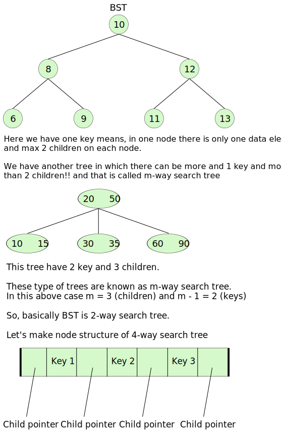- Now the question is that, can we use these trees for preparing index??
Problem with m-way search tree
- When control and guidelines are applied on m-way search tree they become B-trees.
What are those rule?
- Every node must be filled atleast half.
- If the degree is m then [m/2] (ceil value) children must be there to control the height of the tree.
- Root can have minimum 2 children.
- All leaf node must be at same level.
- Creation process is bottom-up
B Tree
Let's create a B Tree where m = 4 and we will insert 10, 20, 40, 50
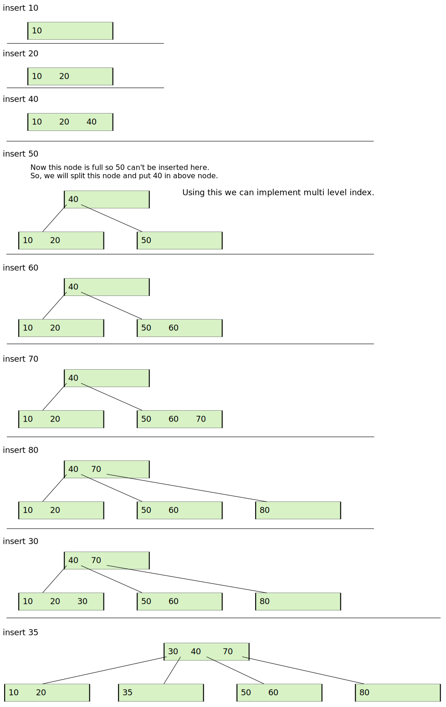- This is how B-tree is generated while inserting.
B+ Tree
- In B+ tree we will not have record pointer from every key. We will have record pointer only from leaf nodes.
- All the internel key will be present in leaf node also and all leaf node will be connected like linked list.
- So Rather than B-Tree, B+-Tree is exactly like a multi level indexing.